|
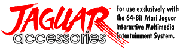
Atari planned to support the Jaguar with a
large range of accessories to enhance the platforms capabilities, and to
promote the range of options available to entice new customers along the
way. There was no doubting that the accessories available were
well designed and practical products, in some cases, such as the
"Memory Track", essential for the serious Jaguar gamer. Some of
the products which never made it to the retail shelves could have
boosted the desirability of the system if they had made it out of R&D,
such as the Modem, VR and MPEG add-ons.
::
Official accessories released for the Jaguar ::
|
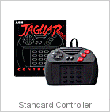 |
The standard Jaguar Controller was a unique
design, incorporating the earlier Atari designed "keypad" feature seen
first on the Atari 2600 "Keyboard controller". Although levelled
with much criticism when it was first seen, once used, it provides
ample comfort for prolonged use. The controller could also use
keypad overlays, which had instructions for games utilising the keypad
controls. |
| |
|
|
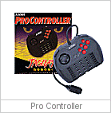 |
The Pro Controller was launched much later
in the Jaguars' life, in fact, very close to the end of it. It has
an additional 3 "fire" buttons, and the trademark "Super Nintendo" style
shoulder buttons. Few games used these extra features, and the Pro
Controller was actually rendered near obsolete. Few were released
officially, and they are treasured by their owners! |
| |
|
|
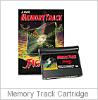 |
The Atari Jaguar had no internal game save
feature, although some cartridges enabled the use of a facility to save
game positions and scores. Of course, this wasn't a feature you
could use playing CD games, so Atari released a special cartridge for
Jaguar CD owners to record game positions and score data. |
| |
|
|
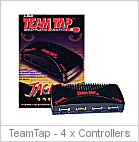 |
For multi-player games, you could have
attach the TeamTap adaptor to your Jaguar, allowing up to 4 players to
play on one Jaguar at the same time. Even better, plug-in 2
TeamTap adaptors, and 8 players could play the same game! |
| |
|
|
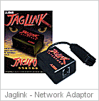 |
Of course, if you had ever played Doom at
work over your PC network (depending how friendly your IT department
was), it was a must have to own the JagLink. Now you could play
head-to-head with your friends at home, and theoretically, up to 127
Jaguars could be connected!!! |
| |
|
|
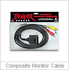 |
For better picture quality, a composite
monitor cable was made available by Atari. In Europe, the popular
"Scart" cable was also available. |
| |
|
|
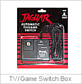 |
There's nothing worse than having to rummage
around the back of your TV changing cables for viewing TV or playing
your Jaguar. A switchbox was released from Atari to make your life
less stressful. |
| |
|
|
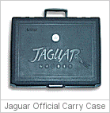 |
Atari originally made Jaguars available to
rent at your local Blockbusters Video Rental store, and these carry
cases kept the Jaguar safe from knocks and bangs on the way to another
clients home. They weren't released as commercial carry cases,
although its still possible to purchase them. |
|
|
|
|
:: Official accessories developed to prototype stage :: |
|
|
|
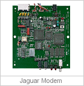 |
The Jaguar Modem was developed
for network play, with the addition of simultaneous data
and voice transmission. The idea was you could
play a game with someone and talk to them at the same
time, over the same phone line. With a maximum of
19,200 baud, the only Jaguar game with working modem code
is Ultra Vortek. |
| |
|
|
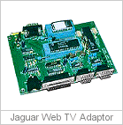 |
"Cortina" (codename based on a
70's UK car from Ford) is a "Web TV" interface that
would have allowed web browsing and E-mail. The
Cortina was fully developed, although working software for
the Jaguar was never finished. It provided the interface
for a modem (serial), keyboard and mouse. 6 or 8
units were made for prototype testing. |
|